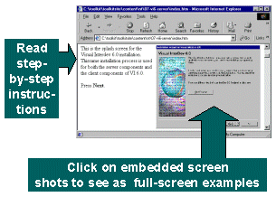
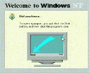

|
The Toolkit includes demonstration applications and comprehensive installation documentation so as to assist community information networks in deploying servers and software for new projects. For the purposes of the demonstration applications, the Toolkit assumes a Windows-NT server environment and provides basic tools to help users in this environment. This assistance is in two basic areas:
Sites should give careful thought to the decision to install and support a server. Sites unsure of whether or not to install a server should consult the "Supporting a Server" chapter in the Toolkit book and view the video titled "Running a Web Server". Once you have decided to run a server, this section should be very helpful in getting started. Before starting the installation process, check to make sure your equipment meets the Minimum Hardware Recommendations.(New browser window) The documentation provided includes comprehensive, step-by-step explanations. Each step consists of a screen shot with annotation explaining what the step entails. Each of the embedded screen images is a hyperlink to a full-screen rendition of that screen shot. Click on the small screen image to see the screen shot full-size. When you are done looking at that screen shot and ready to go to the next step, use your browser's Back button to return to your spot in the narrative. Installing and Configuring a Web ServerThe Toolkit documentation covers the complete installation of Windows-NT starting from the floppy disks and the CD-ROM all the way through installing and testing your web server. Each step is documented with a screen shot and description of the actions and choices for the user. View the NT Installation Materials (New browser window) There are over 350 individual screen shots in this step-by-step
process. Toolkit Application SoftwareThe Toolkit application software implements a database-driven community calendar and a community discussion forum. The software is written as an Active Server Pages application, and the source code (original programming code, suitable for editing if you wish) is included. The software has been designed to be usable without any modifications for simple to moderately complex sites. By providing the source code, it is hoped that a community of users and developers will help to support and extend the product. View the Toolkit Application Software documentation (New browser window) |